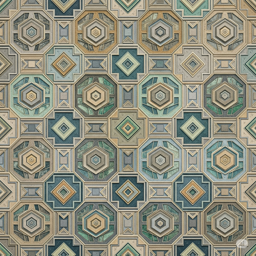

production pattern
Meaning of Pattern
A pattern is the repetition or regular arrangement of lines, shapes, colours, or motifs to form a design. In art, pattern is used to create decorative surfaces, organize compositions, and bring beauty or rhythm to visual works.

Patterns can be natural (as found in nature, like zebra stripes or leaf veins) or man-made (designed by humans for artistic or functional use).
Types of Pattern
- Natural Pattern – Patterns found in nature, such as animal skins, leaf veins, shells, and spider webs.
- Man-made (Artificial) Pattern – Patterns created by humans, such as textile designs, floor tiles, wallpapers, and wrapping paper.
- Symbolic Pattern – Patterns that carry meanings or represent culture, religion, or identity, like Adinkra or Nsibidi symbols.
- Decorative Pattern – Patterns used mainly to beautify surfaces or objects, such as carvings on doors or motifs on clothing.
- Functional Pattern – Patterns used for practical purposes like identification or direction, such as road signs or military badges.
Sources of Pattern
Patterns can be drawn from different sources, such as:
- Natural environment: Leaves, flowers, shells, fish scales, feathers.
- Cultural symbols: Traditional motifs, tribal marks, folk art.
- Objects: Household utensils, tools, toys, architecture.
- Geometric forms: Circles, squares, triangles, zigzags.
- Abstract ideas: Thoughts, dreams, feelings translated into shapes.
Techniques for Creating Patterns
- Motif Repetition – This involves repeating a small design or shape many times in different ways, such as flipping it, turning it around, or placing it in a regular order.
- Stenciling – This technique uses a template with cut-out shapes. Paint or ink is applied over the stencil to create repeated patterns on a surface.
- Stamping – Stamping is done by pressing a carved object onto a surface to leave an image that can be repeated to form a pattern.
- Printing – Printing involves transferring designs onto materials like cloth or paper using special methods such as screen printing or block printing to produce repeated patterns.
- Drawing or Painting – Artists create patterns by hand, drawing or painting shapes, lines, or designs repeatedly on a surface.
Functions and Importance of Pattern
- Patterns decorate clothes, buildings, and artworks to make them look nice.
- Some patterns show traditions, religion, or social status.
- Patterns on uniforms help people recognize groups or jobs quickly.
- Traditional patterns can tell messages or stories without words.
- Patterns help keep a people’s culture alive by passing it down.
- Patterns make artworks more interesting and pleasing to see.
- Patterns organize space in designs to make them clear and neat.
Pattern in Nigerian Art
In Nigeria, patterns are a key part of indigenous arts and crafts, such as:
- Adire – Yoruba hand-dyed cloth using wax or starch resist patterns.
- Akwete – Igbo traditional weaving with geometric and symbolic patterns.
- Pottery – Clay pots often have incised or painted patterns.
- Calabash carving – Gourds are decorated with repeated motifs and lines.
- Textiles – Ankara, batik, and aso-oke fabrics are designed with colorful repeating patterns.
Careers that Use Pattern
- Fashion Designer.
- Textile Designer.
- Graphic Artist.
- Architect.
- Interior Decorator.
- Visual Artist.
- Craftsperson (e.g., potter, weaver, carver) .
How to Produce a Design Using a Pattern
Example: Creating a simple repeating leaf pattern on fabric.
- Choose a motif: Start by drawing a small shape, such as a simple leaf.
- Decide the type of repetition: You can repeat the leaf in a straight line, alternate direction, or arrange it in a circle. For this example, we will repeat the leaf in a straight line across the fabric.
- Draw or stamp the motif: Use a pencil or paintbrush to draw the leaf on the fabric. You can also make a stamp by carving the leaf shape on a small piece of foam or rubber.
- Repeat the motif: Place the leaf shapes side by side, leaving equal space between each one to create a regular pattern. Continue this across the whole fabric.
- Add colors: After completing the pattern, you can color the leaves and background to make the design more attractive.
- Finish your design: Let the paint dry if you used paint, and your patterned fabric is ready to use.
How to Make Patterns by Stenciling
- Create a stencil: Cut out a shape (like a star or flower) from a piece of cardboard or plastic.
- Place the stencil: Put the stencil flat on the surface you want to decorate, like paper or fabric.
- Apply paint: Use a sponge or brush to dab paint over the stencil openings.
- Lift the stencil: Carefully remove the stencil to reveal the shape on the surface.
- Repeat: Move the stencil and repeat the process to create a pattern over the whole surface.
How to Make Patterns by Stamping
- Make a stamp: Carve a simple design (like a circle or leaf) on a small piece of rubber, foam, or even a potato.
- Apply ink or paint: Dip the stamp into paint or ink so it covers the carved design.
- Press the stamp: Press the stamp firmly onto paper, fabric, or another surface.
- Repeat: Lift and press the stamp repeatedly to form a pattern, leaving equal spaces between each print.
How to Make Patterns by Rotation
- Draw a motif: Draw a small shape, such as a triangle or flower, on paper.
- Place the motif: Put the shape on the surface where you want to start the pattern.
- Rotate the motif: Turn the shape around a fixed point (like the center of a circle) by a set angle, for example, 90° or 180°.
- Repeat rotation: Keep rotating and drawing the shape until you complete the circle or desired area.
- Fill the space: Add more rotated motifs if needed to fill the design area.